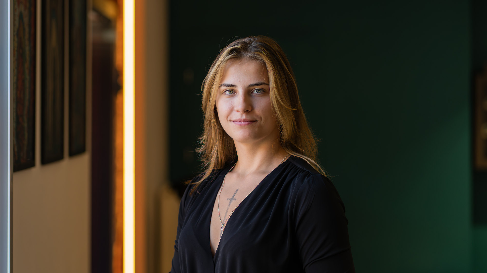
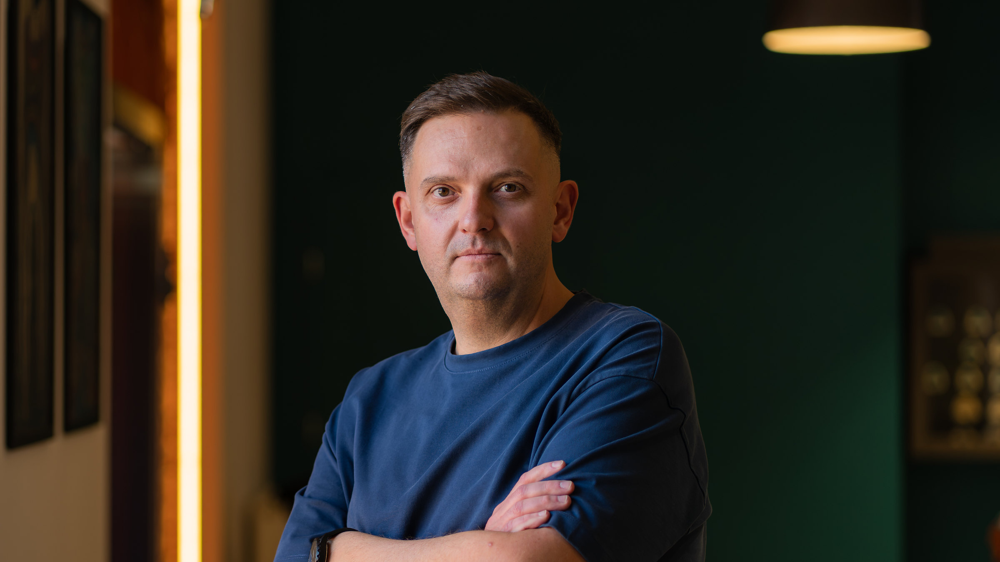
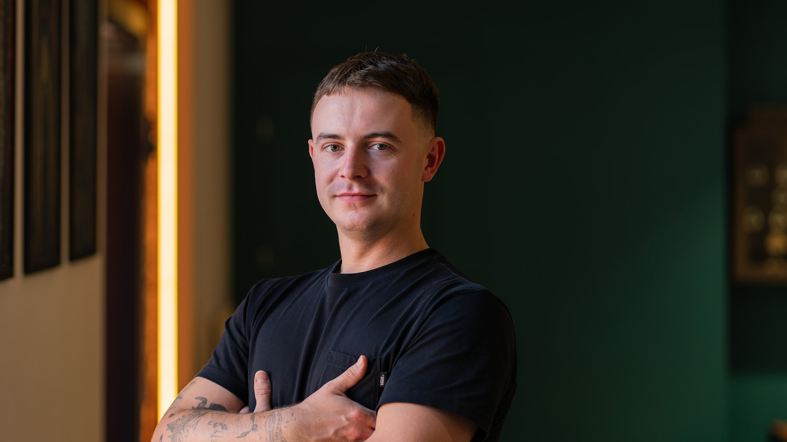
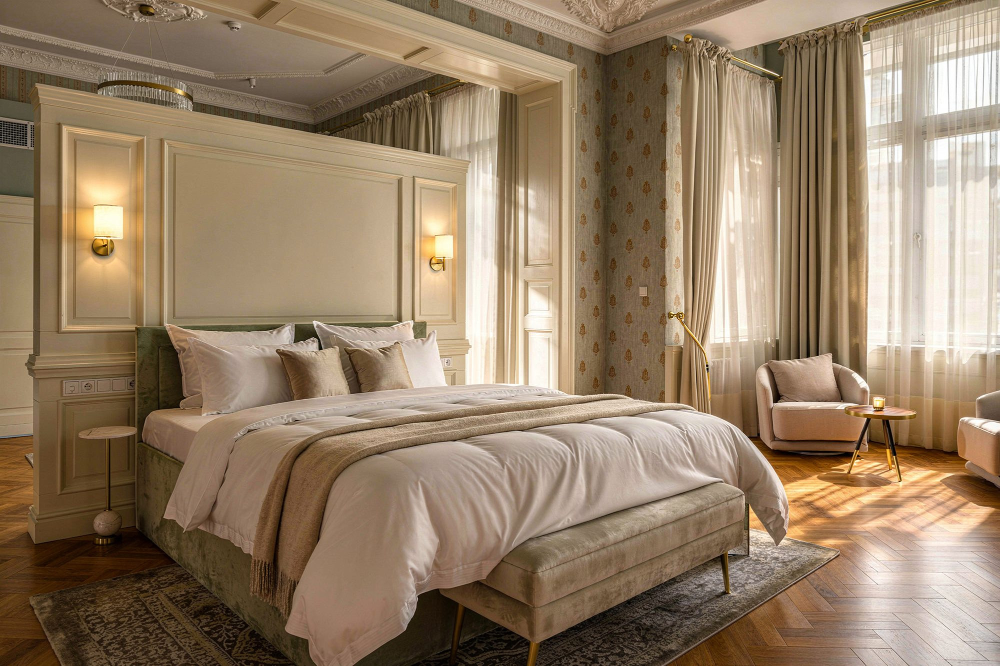
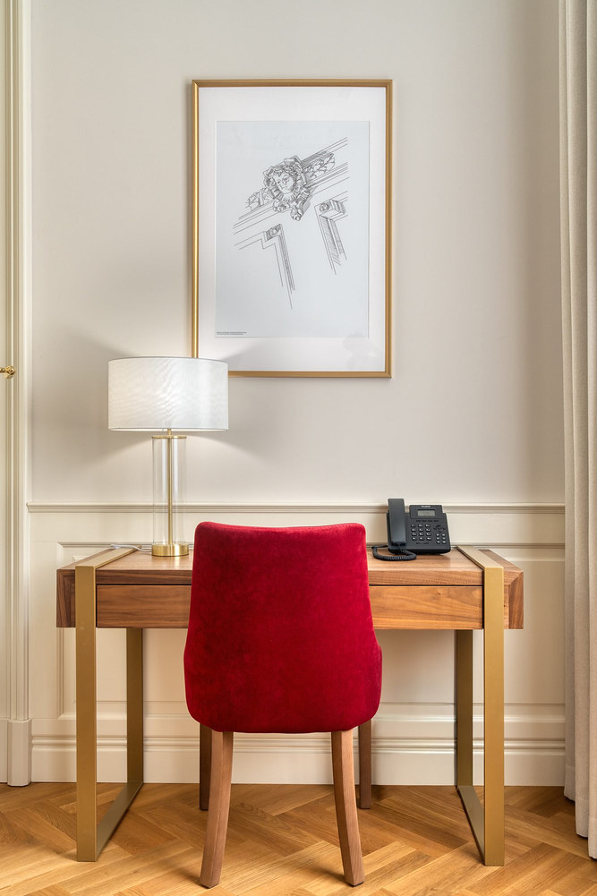
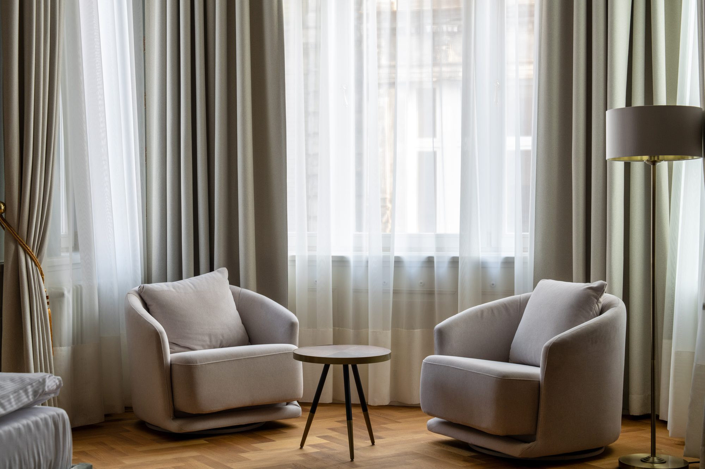
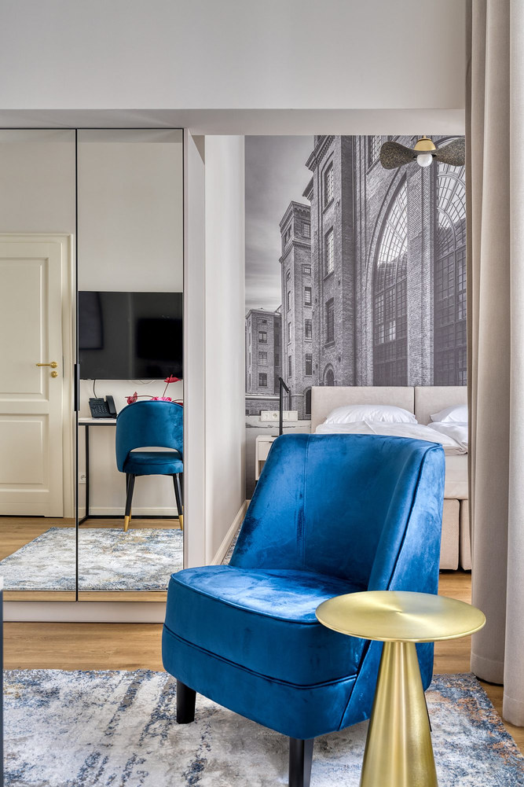
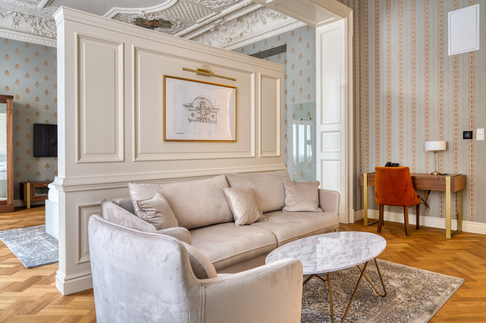
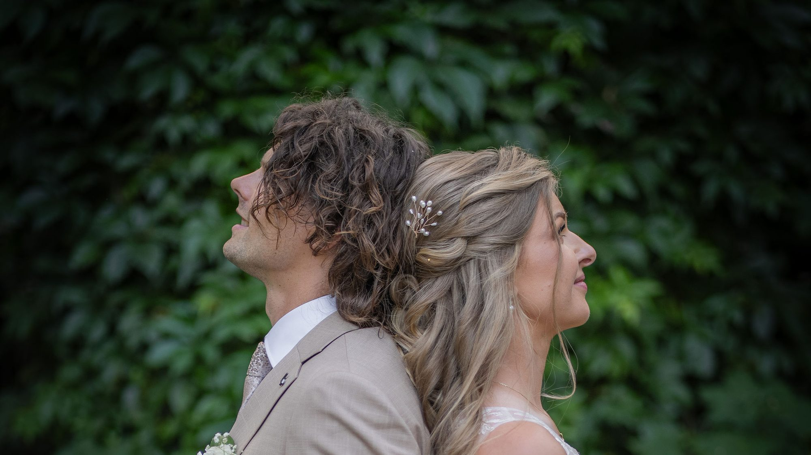

Pierwsze pytanie przed każdą sesją
Po co Ci to zdjęcie?
Najpierw cel, potem kadr. Fotografuję ludzi i miejsca dla firm: portrety biznesowe i wnętrza, w Łodzi i w całej Polsce.

Cztery osoby w jednym świetle
Klient, który potem przyjdzie do biura, spotka tych samych ludzi, których widział na stronie. Dlatego każdy wygląda tu po swojemu.


Zdjęcie dowodzi, że to istnieje.
Wizualizacja pokazuje plan. Fotografuję wnętrza hoteli, apartamentów i biur takie, jakie są: proste piony, kolor zgodny z materiałem, światło tego miejsca.
Podczas jednej wizyty fotografuję przestrzeń i ludzi, którzy w niej pracują.





Jak pracuję
Rozmowa
Po co to zdjęcie i kto je zobaczy. Zawsze, przed każdą sesją.
Miejsce i światło
Często oglądam miejsce wcześniej. Światło zastane albo ustawione, zależnie od celu.
Zdjęcia
Prawdziwe zdjęcia z sesji. Retusz tylko uzgodniony z Tobą.
O mnie
Mariusz Świerguła
- 20 latw finansach
- 10 latjako dyrektor
- 700 osóbw zespole
- prawie 30 latz aparatem
Znam drugą stronę stołu: wiem, do czego firmie służy zdjęcie i jak prowadzić ludzi, którzy nie lubią się fotografować. W firmie zrobiłem ponad 300 portretów pracowników. Najpierw słucham, potem robię zdjęcie.

Zacznijmy od pytania.
Albo wprost
Odpowiadam osobiście. Pracuję w Łodzi i dojeżdżam do klientów w całej Polsce.
Zadzwoń · 600 353 150 mariusz.swiergula@gmail.com